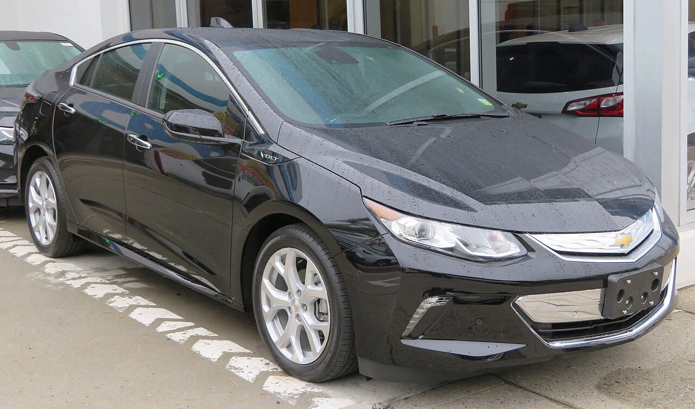

⚡
Сначала электричество
Электрический силовой агрегат мощностью 149 л.с. и 398 Нм везёт машину на батарее первые ~85 км. Большинство владельцев почти не тратят бензин на ежедневные поездки.
2016 – 2019 · Voltec (EREV)
Chevrolet Volt второго поколения сочетал 85 км электрического хода с бензиновым генератором: каждый день вы ездили на электричестве, а в дальние поездки отправлялись без страха остаться без заряда. Это любительский гид — плюс три калькулятора для оценки здоровья батареи, стоимости на вторичном рынке и реальной цены замены батареи.

Фото: Kevauto, Wikimedia Commons — CC BY-SA 4.0
Электромобиль с увеличенным запасом хода (EREV): настоящий электрокар с бензиновым генератором в качестве резерва.
Электрический силовой агрегат мощностью 149 л.с. и 398 Нм везёт машину на батарее первые ~85 км. Большинство владельцев почти не тратят бензин на ежедневные поездки.
Когда батарея разряжается, двигатель 1.5 л работает как генератор (а иногда и приводит колёса), обеспечивая суммарный запас хода ~676 км. Заправляйтесь где угодно.
Из батареи 18.4 кВт·ч реально используется лишь ~14 кВт·ч. Работа вдали от 0% и 100% — причина того, что батареи Volt стареют на удивление медленно.
Второе поколение (2016+) получило более плавную систему Voltec с двумя моторами, облегчённую батарею, 5-е место и куда более тихий запуск ДВС, чем первое поколение.
Цифры Volt 2016–2019 (комплектации LT / Premier).
| Система | Voltec, два мотора (EREV) |
|---|---|
| Электр. мощность | 149 л.с. (111 кВт) |
| Электр. момент | 398 Нм (294 lb-ft) |
| ДВС | 1.5 л, I4 (101 л.с.) |
| Разгон 0–100 км/ч | ~8.0 с |
| Макс. скорость | 158 км/ч |
| Батарея | 18.4 кВт·ч Li-ion (~14 полезных) |
|---|---|
| Ячейки | 192, жидкостное охлаждение |
| Электрозапас | 85 км (EPA) |
| Общий запас | ~676 км |
| Эффективность | ~5.6 л/100 км (106 MPGe) |
| Гарантия | 8 лет / 160 000 км (батарея) |
| Level 1 (120 В) | ~13 ч |
|---|---|
| Level 2 (240 В, 3.6 кВт) | ~4.5 ч |
| Level 2 (2019, 7.2 кВт) | ~2.3 ч |
| Быстрая зарядка DC | Не поддерживается |
| Разъём | SAE J1772 |
| Кузов | 5-дверный хэтчбек, 5 мест |
|---|---|
| Снаряжённая масса | ~1607 кг |
| Багажник | 300 л (10.6 куб. фт) |
| Длина | 4582 мм (180.4 дюйма) |
| Коэф. сопротивления | 0.28 Cd |
| Топливный бак | 33.7 л (8.9 галлона) |
Оцените остаточную полезную ёмкость батареи вашего Volt по возрасту, пробегу и характеру эксплуатации. Это модель, а не диагностика — для точного значения нужен дилерский тест.
Модель основана на опубликованных данных о деградации Volt/Bolt (календарный + циклический износ с поправками на климат и стиль эксплуатации). Отдельные батареи отличаются; для точного значения используйте дилера GM или OBD-скан (например, Torque Pro).
Примерная частная цена продажи по году, пробегу, состоянию и здоровью батареи. Volt быстро дешевеет в начале, затем стабилизируется — хорошая новость для покупателей б/у.
Только ориентир — реальные цены зависят от локального спроса, правил налоговых льгот на EV и сезона. Сверяйтесь с KBB, Edmunds и свежими локальными объявлениями перед покупкой или продажей.
Сколько стоит починить или заменить высоковольтную батарею — то, чего больше всего боятся будущие владельцы (обычно напрасно).
Цены отражают типичные диапазоны рынка США по данным владельцев и мастерских; полные блоки GM редки, поэтому восстановленные блоки и ремонт на уровне модулей — обычное реальное решение. Всегда берите письменную смету.
Вопросы, которые задаёт каждый будущий владелец Volt.
Редко. Благодаря агрессивной буферизации (используется лишь ~14 из 18.4 кВт·ч) и жидкостному охлаждению батареи второго поколения обычно сохраняют 85–95% полезной ёмкости и после 160 000 км. Полный отказ блока — редкость, и обычно он покрывается гарантией 8 лет / 160 000 км.
Да. Двигатель 1.5 л будет работать как генератор, и машина поедет как гибрид с расходом ~5.6 л/100 км. Но именно зарядка даёт экономию — без неё вы упускаете самые дешёвые километры.
GM прекратил выпуск Volt в начале 2019 года, чтобы переориентировать заводские мощности на кроссоверы и чистые электромобили вроде Bolt. Это не было проблемой надёжности — Volt остаётся одним из самых уважаемых подключаемых гибридов в истории.
Как подержанный автомобиль он может подпадать под федеральный вычет за чистые б/у авто (до $4000), если цена и ваш доход укладываются в лимиты, плюс некоторые льготы штатов. Правила часто меняются — проверьте актуальные условия перед покупкой.
В целом всё спокойно: 12-вольтовый аккумулятор, шины, тормоза (служат долго благодаря рекуперации) и обслуживание охлаждающих контуров батареи и электроники. При покупке обязательно проверьте здоровье высоковольтной батареи сканом.
Ответы генерирует ИИ и могут содержать неточности.